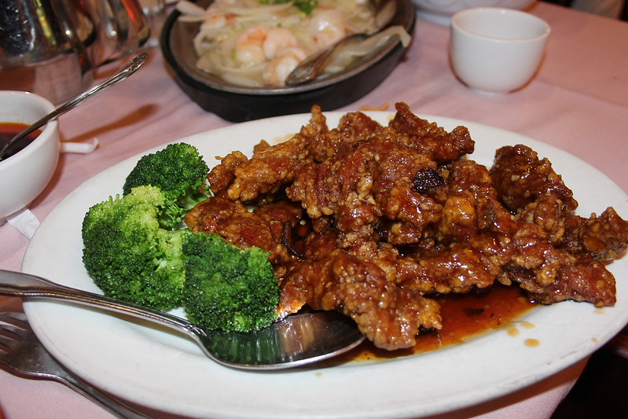

Home
Orange Chicken (橙花鸡)

Photo shot by
Navin Rajagopalan
Description :
Crispy fried chicken tossed in a bright, sweet and savory orange sauce!
Ingredients :
- Boneless Skinless Chicken Thighs
- Cornstarch
- Neutral Oil
- Sesame Seeds
- Orange Zest
- Green Onions
- Freshly-Squeezed Orange Juice (no pulp)
- White Vinegar
- Brown Sugar
- Regular Soy Sauce
- Garlic
- Ginger Powder
- Cornstarch
Steps :
- Start with boneless skinless chicken breast or thighs. Cut into bite-size pieces. Dredge the chicken in whisked eggs and cornstarch/flour mixture until nice and coated. Get these chicken pieces ready for the oil.
- To make your homemade orange sauce, place orange juice, sugar, vinegar, soy sauce, garlic, ginger, and red chili flakes in a small pot and cook over medium-high heat. Add cornstarch and water and cook until thickened. Stir in orange zest.
- Heat oil in a heavy-bottomed pot over medium-high heat.
- When frying foods, it is so helpful to use a thermometer. Let the oil heat up to 350 degrees. Once the oil is ready, in batches, cook chicken for about 2 minutes until light golden brown. Repeat with remaining chicken.
- Remove from oil and drain on a paper towel-lined plate.
- Toss fried chicken with the sweet orange sauce. Top with grated orange zest and green onions. Serve immediately.